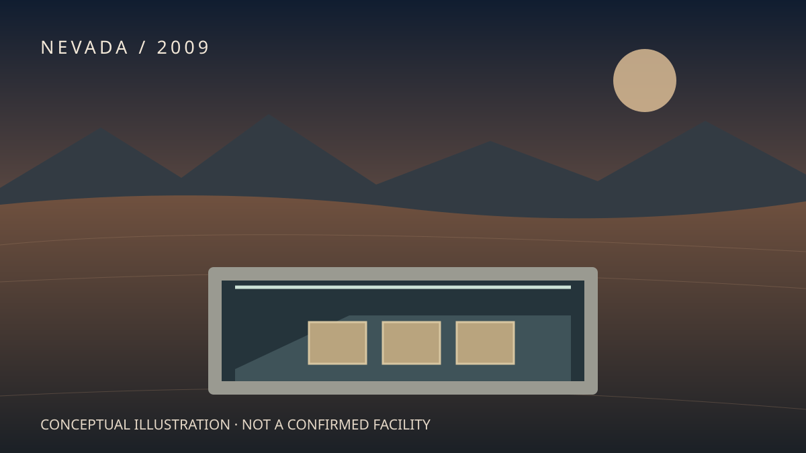
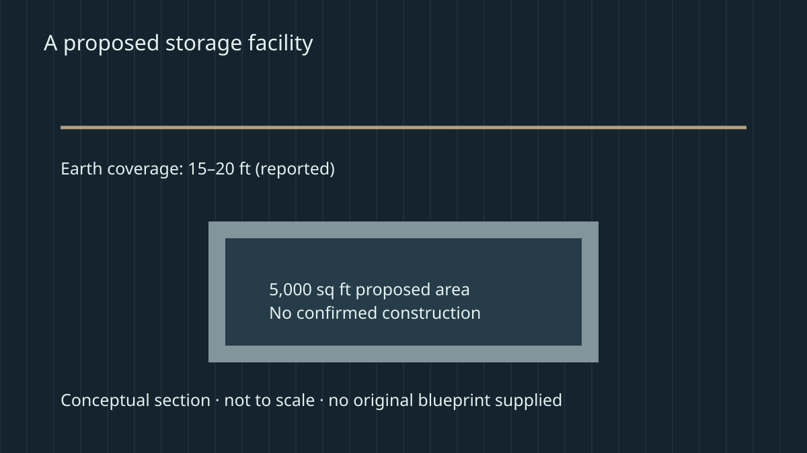
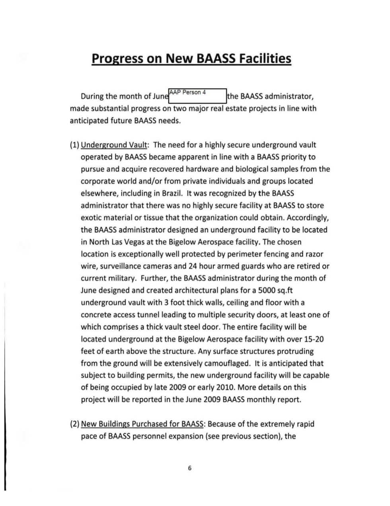
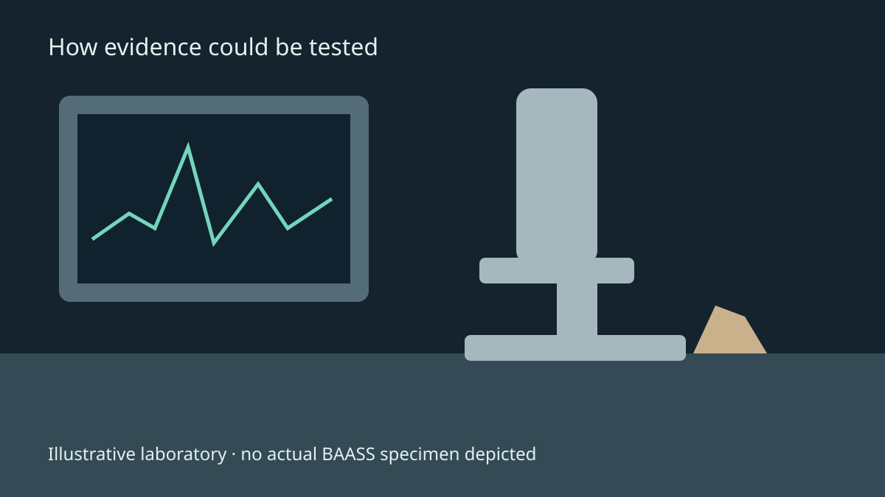

Government Disclosure · Investigative Feature · November 27, 2026
Why Did a Pentagon Contractor Design an Underground Vault to Store UFO Materials?
A contractor report describes an underground Nevada vault. What was it intended to hold—and was it ever built?

Imagine a storage facility beneath the Nevada desert, designed not for ordinary office records but for unusual hardware and biological specimens that researchers hoped they might obtain. In 2009, Bigelow Aerospace Advanced Space Studies (BAASS) described just such a proposal in two progress reports. The documents give the idea a tangible historical foundation, while leaving its ultimate fate unresolved.
The story resurfaced in November 2026 coverage of government UAP records. The most interesting question is not whether the reports prove aliens exist. They do not. It is why a government-funded aerospace research contractor considered a dedicated underground facility necessary, and what that tells us about the scope of its ambitions.
The underground vault
The June report, dated July 9, 2009, describes a proposed 5,000-square-foot underground vault at a Bigelow Aerospace facility in North Las Vegas. Its stated purpose was to provide secure storage for materials the organization might acquire. The report describes substantial protective construction and an anticipated occupancy date of late 2009 or early 2010, explicitly conditional on building permits. The July 30 Ten Month Report repeats the proposal. Neither passage establishes that construction began or was completed.

What the documents reveal
The two reports provide unusually concrete descriptions of the proposed project. Both give the same floor area and describe an underground structure with substantial earth coverage. The June report attributes design work to June, while the Ten Month Report attributes it to May. The difference is small but worth preserving: the documents place planning in May–June 2009, without resolving the precise month.
These are two reports from the same contractor, not two independent witnesses. Their agreement strengthens our understanding of what BAASS reported, but does not independently confirm the facility's existence.

Compare D172, Ten Month Report, printed page 3 (PDF page 9).

What was the vault intended to hold?
The reports describe a priority to pursue recovered hardware and biological samples from companies, private individuals and groups, including sources in Brazil. They refer to the possibility of obtaining “exotic material or tissue.” The wording is conditional: it describes material that the organization could obtain, rather than an inventory of material already in its possession.
Exotic is not a scientific determination of extraterrestrial origin. An unusual alloy, unfamiliar manufacturing process or biological sample associated with a reported encounter would require careful examination before its origin could be established. The report does not identify a confirmed alien specimen in the vault.
The Pentagon's UFO research program
BAASS was a contractor associated with the Defense Intelligence Agency's Advanced Aerospace Weapon System Applications Program (AAWSAP). The Ten Month Report, printed page 1, describes a contract awarded in September 2008 and research across twelve technical areas, including propulsion, materials and human effects. The proposed vault appears in the report's organizational infrastructure section rather than as a completed scientific discovery.
The June report also describes an agreement with the Mutual UFO Network (MUFON) for incident information and physical evidence, including ordinary environmental samples. This helps explain why the contractor might have anticipated a need for storage and laboratory analysis without assuming that any material was extraterrestrial.
How would scientists examine exotic materials?

Printed page 11 of D171 states that BAASS had laboratories ready to conduct forensic, metallurgical, chemical, isotopic and biological analyses on specimens received through MUFON. That is a contractor-reported capability, not a published test result.
In general, microscopy can reveal microstructure and manufacturing traces. Elemental and isotopic measurements can help compare a specimen with known materials, while biological examination can test whether a sample contains recognizable cells or molecular signatures. A credible conclusion also requires documented provenance, contamination controls, suitable reference samples, uncertainty estimates and independent replication. An unusual measurement alone is not sufficient to establish nonhuman origin.
For general scientific context, see the National Institute of Standards and Technology and National Center for Biotechnology Information. These are background resources, not evidence that BAASS performed any particular test.
Was the facility ever built?
The passages reviewed describe a planned facility and a conditional schedule. They do not supply a construction completion certificate, occupancy permit, as-built drawing or inventory. The Ten Month Report anticipates further details in an August 2009 report. Finding that follow-up, or independently authenticated construction and occupancy records, would be more informative than repeating the original proposal.
Why this document matters
The records illuminate how one contractor approached the possibility of collecting physical evidence during a government-funded research program. They show that the proposed infrastructure was discussed in concrete terms, while also demonstrating the difference between an intention and a verified outcome.
The questions that remain
Did the proposed vault receive permits or funding? Was it completed? Did any physical samples reach the organization, and if so, what did independently reproducible analyses establish? The documents give researchers specific questions to pursue, not answers that can be assumed.
Continue exploring
PURSUE Release 08 news analysis · BAASS contractor report · AAWSAP · Connected documentary record
Sources and evidence notes
- DOW-UAP-D171, BAASS June Report, July 9, 2009, printed pp. 6 and 11 (PDF pp. 7 and 12).
- DOW-UAP-D172, BAASS Ten Month Report, July 30, 2009, printed pp. 1 and 3 (PDF pp. 7 and 9).
- New York Post, November 26, 2026, contemporary news trigger.
- Government UAP archive, release context.
Relevant pages were inspected directly from supplied PDFs. The PDF links are third-party mirrors; official release provenance was not independently authenticated in this build. No construction or extraterrestrial recovery is established by the cited passages.